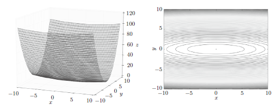
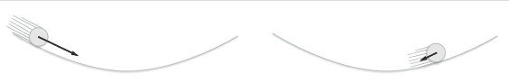
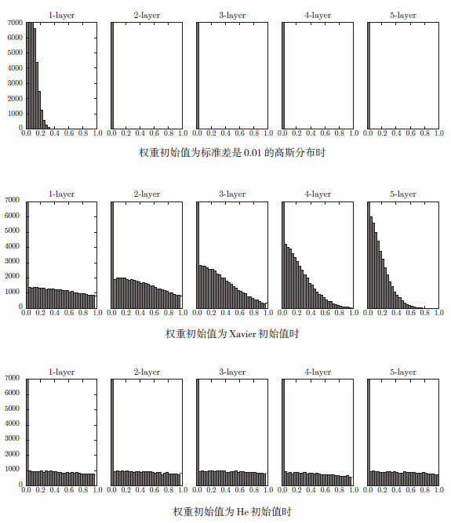

DL-深度学习入门-基于Python的理论与实现-6-与学习相关的技巧
目录
6.1 参数的更新
6.1.2 SGD
|
6.1.3 SGD 的缺点

如果函数的形状非均向（anisotropic），比如呈延伸状，搜索的路径就会非常低效。因此，我们需要比单纯朝梯度方向前进的SGD更聪明的方法。SGD低效的根本原因是，梯度的方向并没有指向最小值的方向(指向极小值的方向)。
6.1.4 Momentum

Momentum方法给人的感觉就像是小球在地面上滚动。
新出现了一个变量 $v$，对应物理上的速度。
$\alpha v$ 这一项。在物体不受任何力时，该项承担使物体逐渐减速的任务（$\alpha$ 设定为0.9 之类的值），对应物理上的地面摩擦或空气阻力。
|
6.1.5 AdaGrad
在神经网络的学习中，学习率（数学式中记为 $\eta$）的值很重要。
学习率过小，会导致学习花费过多时间；
学习率过大，则会导致学习发散而不能正确进行。
在关于学习率的有效技巧中，有一种被称为学习率衰减（learning rate decay）的方法，即随着学习的进行，使学习率逐渐减小。实际上，一开始“多”学，然后逐渐“少”学的方法，在神经网络的学习中经常被使用。
和前面的 SGD 一样，$\mathbf W$ 表示要更新的权重参数，$\frac{\partial L}{\partial \mathbf W}$表示损失函数关于 $\mathbf W$ 的梯度，$\eta$ 表示学习率。这里新出现了变量 $\mathbf h$ ，保存了以前的所有梯度值的平方和（$\odot$ 表示对应矩阵元素的乘法）。然后，在更新参数时，通过乘以 $\frac{1}{\sqrt{\mathbf h}}$，就可以调整学习的尺度。
AdaGrad 会记录过去所有梯度的平方和。因此，学习越深入，更新的幅度就越小。实际上，如果无止境地学习，更新量就会变为0，完全不再更新。为了改善这个问题，可以使用 RMSProp 方法。RMSProp 方法并不是将过去所有的梯度一视同仁地相加，而是逐渐地遗忘过去的梯度，在做加法运算时将新梯度的信息更多地反映出来。这种操作从专业上讲，称为“指数移动平均”，呈指数函数式地减小过去的梯度的尺度。
|
6.1.6 Adam
Adam 是2015 年提出的新方法。它的理论有些复杂，直观地讲，就是融合了Momentum和AdaGrad的方法。通过组合前面两个方法的优点，有望实现参数空间的高效搜索。此外，进行超参数的“偏置校正”也是Adam的特征。
Adam 会设置3 个超参数。一个是学习率（论文中以 $\alpha$ 出现），另外两个是一次 momentum 系数 $\beta_1$ 和二次momentum系数 $\beta_2$。根据论文，标准的设定值是 $\beta_1$ 为0.9，$\beta_2$ 为0.999。设置了这些值后，大多数情况下都能顺利运行。
|
很多研究中至今仍在使用 SGD。Momentum 和 AdaGrad 也是值得一试的方法。最近，很多研究人员和技术人员都喜欢用 Adam。
6.2 权重的初始值
6.2.1 可以将权重初始值设为0吗
不行。为了防止“权重均一化”（严格地讲，是为了瓦解权重的对称结构），必须随机生成初始值。
6.2.2 隐藏层的激活值的分布
随着输出不断地靠近 0（或者靠近 1），它的导数的值逐渐接近 0。因此，偏向 0 和 1 的数据分布会造成反向传播中梯度的值不断变小，最后消失。这个问题称为梯度消失（gradient vanishing）。层次加深的深度学习中，梯度消失的问题可能会更加严重。
现在，在一般的深度学习框架中，Xavier 初始值已被作为标准使用。比如，Caffe框架中，通过在设定权重初始值时赋予xavier 参数，就可以使用Xavier 初始值。
Xavier初始值：与前一层有 $n$ 个节点连接时，初始值使用标准差为 $\frac{1}{\sqrt n}$ 的分布。
|

6.2.3 ReLU的权重初始值
Xavier 初始值是以激活函数是线性函数为前提而推导出来的。因为 sigmoid 函数和 tanh 函数左右对称，且中央附近可以视作线性函数，所以适合使用 Xavier 初始值。但当激活函数使用 ReLU 时，一般推荐使用 ReLU 专用的初始值，也就是Kaiming He等人推荐的初始值，也称为“He初始值”。
当前一层的节点数为 $n$ 时，He 初始值使用标准差为 $\sqrt\frac{2}{n}$ 的高斯分布。当 Xavier 初始值是 $\frac{1}{n}$ 时，（直观上）可以解释为，因为 ReLU 的负值区域的值为 0，为了使它更有广度，所以需要 2 倍的系数。
6.3 Batch Normalization
到如果设定了合适的权重初始值，则各层的激活值分布会有适当的广度，从而可以顺利地进行学习
Batch Normalization 为了使各层拥有适当的广度，“强制性”地调整激活值的分布。
Batch Normalization 的优点：
可以使学习快速进行（可以增大学习率）。
不那么依赖初始值（对于初始值不用那么神经质）。
抑制过拟合（降低Dropout等的必要性）。
6.3.1 Batch Normalization 的算法
Batch Norm，顾名思义，以进行学习时的 mini-batch 为单位，按 minibatch 进行正规化。具体而言，就是进行使数据分布的均值为 0、方差为 1 的正规化。
对于 mini-batch 的 $m$ 个输入数据的集合 $B$：
$\mu_B \leftarrow \frac{1}{m}\sum^m_{i=1}x_i$，求均值
$\sigma^2_B\leftarrow \frac{1}{m}\sum^m_{i=1}\left(x_i-\mu_B\right)^2$，求方差
$\hat x_i\leftarrow\frac{x_i-\mu_B}{\sqrt{\sigma^2_B+\varepsilon}}$，$\varepsilon$ 是一个微小值，如 $10^{-7}$ 等，防止出现除以 0 的情况。
将 mini-batch 的输入数据 $\{x_1, x_2, …, x_m\}$ 变换为均值为 0，方差为 1 的数据 $\{\hat x_1,\hat x_2,…,\hat x_m\}$，接着，Batch Norm层会对正规化后的数据进行缩放和平移的变换：
这里，$\gamma$ 和 $\beta$ 是参数。一开始 $\gamma = 1, \beta = 0$，然后再通过学习调整到合适的值。
6.4 正则化
6.4.1 过拟合
模型拥有大量参数、表现力强。
训练数据少。
6.4.2 权值衰减
权值衰减是一直以来经常被使用的一种抑制过拟合的方法。该方法通过在学习的过程中对大的权重进行惩罚，来抑制过拟合。
损失函数加上权重的平方范数（L2 范数）。这样一来，就可以抑制权重变大。
L2 范数相当于各个元素的平方和。用数学式表示的话，假设有权重 $\mathbf W= (w_1, w_2, … , w_n)$，则L2 范数可用 $\sqrt{w^2_1+w^2_2+…+w^2_n}$ 计算出来。除了 L2 范数，还有L1 范数、L ∞范数等。L1 范数是各个元素的绝对值之和，相当于 $|w1| + |w2| + … + |wn|$。L∞范数也称为 Max 范数，相当于各个元素的绝对值中最大的那一个。L2 范数、L1 范数、L∞范数都可以用作正则化项，它们各有各的特点，不过这里我们要实现的是比较常用的L2范数。
6.4.3 Dropout
Dropout 是一种在学习的过程中随机删除神经元的方法。训练时，随机选出隐藏层的神经元，然后将其删除。
|
6.5 超参数的验证
超参数（hyper-parameter）也经常出现。这里所说的超参数是指，比如各层的神经元数量、batch 大小、参数更新时的学习率或权值衰减等。如果这些超参数没有设置合适的值，模型的性能就会很差。
6.5.1 验证数据
如果使用测试数据调整超参数，超参数的值会对测试数据发生过拟合。换句话说，用测试数据确认超参数的值的“好坏”，就会导致超参数的值被调整为只拟合测试数据。
调整超参数时，必须使用超参数专用的确认数据。用于调整超参数的数据，一般称为验证数据（validation data）。
如果是MNIST数据集，获得验证数据的最简单的方法就是从训练数据中事先分割20%作为验证数据：
|
6.5.2 超参数的最优化
步骤0 设定超参数的范围。
步骤1 从设定的超参数范围中随机采样。
步骤2 使用步骤1 中采样到的超参数的值进行学习，通过验证数据评估识别精度（但是要将 epoch 设置得很小）。
步骤3 重复步骤1 和步骤2（100 次等），根据它们的识别精度的结果，缩小超参数的范围
6.6 小结
参数的更新方法，除了SGD 之外，还有Momentum、AdaGrad、Adam等方法。
权重初始值的赋值方法对进行正确的学习非常重要。
作为权重初始值，Xavier 初始值、He初始值等比较有效。
通过使用Batch Normalization，可以加速学习，并且对初始值变得健壮。
抑制过拟合的正则化技术有权值衰减、Dropout等。
逐渐缩小“好值”存在的范围是搜索超参数的一个有效方法。